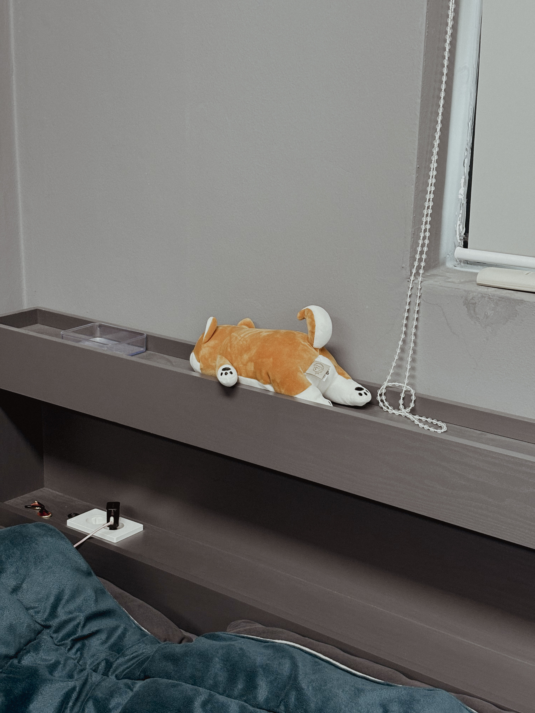
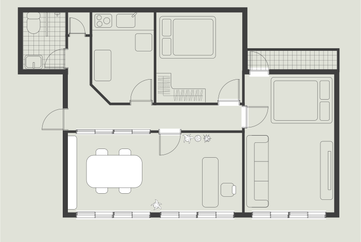
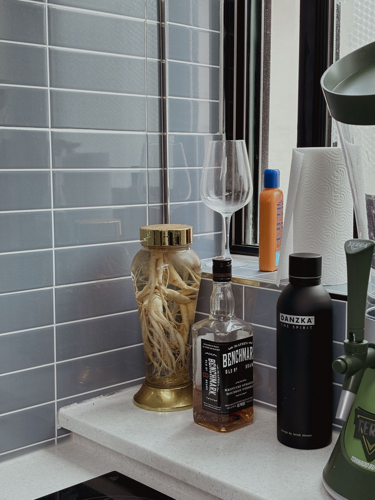

G-ARCH PROJECT


우리가 얼굴은 모임에서 종종 봤어도 깊은 얘기를 해볼 일이 잘 없죠. 같이 어린 시절부터 천천히 얘기를 좀 해볼게요. 어린 시절은 탄3는 어떤 사람이었나요?
저는 되게 소심하고 겁도 많고 엄마 품에서 못 나오는 애였어요. 엄마든 형이든 아빠든 보호자가 있어야 되고, 친척집을 가더라도 치마폭이나 바짓단을 못놓는 아이였어요.
다른 애들은 또래들끼리 놀라고하면 가서 막 노는데, 어른들 옆에 딱 붙어있는 아이였군요.
그래서 제일 친한 친구, 맨날 같이 다니는 친구가 생기지 않으면 어디 밖에 못 나가고 혼자서 못 다니고 그랬어요.
친구 만드는 데도 좀 시간이 걸리고요?
그렇죠. 힘들더라고요. 이제 커가면서 성격이 바뀐 때도 있었지만 제 기본 성격이 그런 것 같아요. 사람 만나는 거를 힘들어하고 스트레스를 받아요.
사람을 만나서 대하는 게 힘든건가요? 아니면 사람을 만나고 나면 에너지가 금방 떨어지는 건가요?
기가 빨리는 것도 있는데, 어떤 관계를 새로 만들고 하는 그런 거에 신경 쓰는게 너무 스트레스에요. 그래서 대학교 처음 들어가서 대학교 1학년 때는 아예 과 생활을 안 했어요. 군대 갔다 와서 복학을 했는데 다른 애들은 1학년 때 친했던 선배들한테 이것저것 물어보고 자료도 받고 선배들이 와가지고 이것저것 도와주잖아요. 근데 전 아는 선배들도 없고 선배들도 내 이름은 모르고 난 그 자리에서 없는 존재가 돼버린 거죠.
저도 원래 남 도움받고 이런 거를 싫어하고 못하는 성격이거든요. 근데 학교를 다녀보니까 건축과는 특히나 나 혼자서는 힘들고, 주변에서 어떻게 하는지도 듣고 도움도 받고 이렇게 해야 성장할 수가 있잖아요. 저도 처음에는 혼자 낑낑거리면서 해보려다가 안 되니까 스트레스받고 고생한 기억이 나요.
그래서 저는 2학년 때부터 노력해서 외향적으로 지냈어요. 열심히 학교 생활도 하고, 2 3학년 때는 미술 동아리 회장도 하고, 학생회도 하고 그랬어요.근데 지금 졸업하고 사회생활하면서 보니까 그때 제가 참 열심히 E인 척한 I였던 거죠. 저희 아버지가 인상이 험악하셔서 가만히있어도 화내는것 같아요. 저도 그런 외모를 닮아서, 그러지 말아야겠다하고 맨날 웃으면서 다녔어요. 그래서 웃상이다 표정이 좋다 이런 얘기 많이 들었는데, 진짜 많이 노력하면서 산거죠.

어린 시절에 책 많이 읽었다는 얘기도 들었는데, 책을 얼마나 좋아했는지도 궁금해요.
제가 혼자서 만들기 종이접기 하면서 노는것을 좋아했고, 제가 말한 책이라는 게 종이접기 책, 만들기 책 이런 거에요. 어딜가도 그런 책이 많았으니까 초등학교 저학년 때까지 학교에서든 친구 집에 가서든 그걸 책장에서 빼가지고 읽고 있는 거죠. 친구 집에 갔으면 친구랑 놀고 그래야 되는데, 그냥 편한 친구의 집에 가서 편하니까 책을 보고 있다 이런 느낌이죠.
둘이 같이 놀고 막 이런 게 아니군요.
넌 너대로 놀고 있고 나는 나는 책 보고. 그래서 저희 엄마는 그게 쉬웠대요. 어린이날 같은 때에 선물을 사줘야 되는데, 저는 떼도 안 쓰고 뭐 갖고 싶다는 것도 없고 선물 사줘야 하면 종이접기책 이런 거 사주면 되니까 쉬웠다고요.
어린 시절에 본인이 게이인지는 언제 알았어요?
저는 그냥 처음부터 알았던 것 같아요.
날 때부터.
날 때부터. 처음으로 인식을 했던 거는 초등학교 1학년 때인 것 같아요. 남자가 더 편하고 남자 애들이랑 다니는 게 좋고 형들이 멋있다라고 생각을 했어요. 그리고 그게 뭔가 남들과 다르다라는 걸 알아서 티를 안 내고 다녔던 것 같아요.
그럼 여자애들하고는 별로 친하게 지내지 않았어요?
애초에 친구가 많지 않기도 했고, 여자애들이랑 놀러 다녔던 적이 별로 없어요. 중고등학교 때는 남중남고 나오고 학원도 안 다니고 학교에서 계속 야자만 해서 아예 접점이 없기도 했고
어릴 때는 동네에 여자애들이 있지 않았어요?
있었죠. 그냥 있었을 뿐이지만… 제가 얼굴을 잘 못 알아보는 건가라고 생각했던 것도 있어요, 초등학교 때한 반에 한 45명 정도 됐는데, 제가 여자애들 얼굴을 구분을 못 했어요. 같은 반인데도 너무 관심이 없어. 심지어 얘네들은 작년에도 같은 반이었는데 이미지가 비슷한 애들은 구분을 못했어요. 지금 생각해 보니까 내가 얼굴을 기억 못하는 게 아니라 여자에겐 관심 없는 사람이구나 싶죠.
식이 안되면 잘 기억을 못하나요?
남자는 관심 있든 없든 특징이 지어져요. 근데 여자는 그냥 머리 길고 끝인거죠. 저랑 진짜 친하거나 아니면 뭐 키 엄청 크거나 체격이 남들보다 크거나 안경을 쓰거나 이런 특징이 없으면 구분을 못 했어요.
그렇군요. 다시 건축이야기로 돌아가서 제 생각에는 종이접기나 만들기를 좋아했으면 좀 자연스럽게 건축에 관심이 있었을 법도 한데 그렇지 않았다고 하더라고요.
건축은 수능 준비하면서 진로 고민을 할때 알게 된 거고, 저는 초등학교 중학교 고등학교 내내 미술을 하고 싶어 했어요. 그래픽 디자인을 하고 싶었는데 부모님 세대 때는디자이너는 앙드레김밖에 아는 사람이 없었고요.
극단적이네요.
저희 부모님이 어렸을 때는 건축이 유망한 산업이었으니까 그쪽으로 가라고 이야기를 하셔서 수능 거의 막바지에 건축으로 진로를 정했죠.
만드는 걸 좋아했으니까 학교 다니면서는 설계를 좋아했을 법도 한데, 또 설계를 별로 좋아하진 않았다고 하더라고요.
모델 만들고 이거 패널 만들고 이건 너무 적성이랑 잘 맞는데, 건축 설계를 하는 프로세스를 이해 못하겠더라고요. 컨셉이 왜 나와야 되는지도 모르겠고, 왜 사람들의 행동이 이렇게 간다라고 왜 멋대로 판단을 하는지 이해를 할 수가 없었어요. 휴식 공간을 만드는 과제를 하는 데, 휴식 공간을 만들 거면 편한 소파, 좋은 뷰에다가 막 침대 있고 아늑하면 되는 거 아닌가 싶은데, 친구들은 명상을 어떻게 하고 꿈을 형상화하고 이런게 제가 볼 때는 구체적이지 않고 뭔지 모르겠는 거죠.
이야기를 들어보면 계획하는 것보다는 만드는 걸 좋아하고, 디자이너보다는 메이커에 가까운 성향인 것 같아요.
맞아요. 대학교를 준비할 때도 중간에 패션디자인학과를 써보려고 했어요. 왜냐면 저도 ‘내가 미술이 좋은 게 아니라 만드는 걸 좋아한다’는 거를 알고, 입시야 미술로 하겠지만 나중에 먹고 살려면은 내가 만들어야 되지 않을까해서 손으로 직접하는 패션디자인학과를 가야겠다 생각했죠.
가구 이런 것도 잘 맞았을 것 같아요.
좋아했을 것 같은데 한 번도 접해본 일이 없네요.
그럼 설계 말고 특별히 좋아하는 수업같은건 없었어요?
지금 생각해보면 사실 건축과에서 재미있게 할수있었던게 많았어요, 그때 이런 이 프로젝트 했을 때 이렇게 해가지고 정말 재미있게 할 수 있었고, 그때 학교에 3D프린터 레이저커팅기 같은 기구들이 있었으니까 이렇게 할 수 있었는데라는 걸 이제 와서 깨닫지만, 당시에는 전혀 흥미를 못 느끼고 그냥 하는 데 급급했어요.
건축과에서 시키는 것만 하고 따라가는 것도 바쁘긴 하죠,
맞아요. 과정이 빡빡하고 양 자체가 많으니까 그냥 따라가기 벅차고 바빴죠, 5학년 1학기에 설계가 끝나면 졸업전시를 하고 5학년 2학기는 포트폴리오 수업을 하는데, 그때 처음으로 제 작업을 한 거에요. 졸업하고 그래픽 디자이너로 내가 일을 하고 싶으니 건축 전공을 녹일 수 있는 그래픽 작업을 해야겠다라고 고민을 하면서 단면으로 타이포그라피를 만드는 작업들을 했어요.
도중에 휴학하거나 이런 적은 없었어요?
없었어요.
중간에 한 번 쉬어가면, 가끔은 너무 놓쳐버리는 경우도 있지만, 다시 자기의 속도를 다시 찾아가는 경우들이 있는데 5학년 2학기때 재미를 찾았다는 건 좀 안타깝네요.
그래서 조금 고민을 했던 게, 교수님한테 말씀드려가지고 수업 누락을 해서 졸업을 늦출까도 생각했어요. 왜냐하면 학생으로서 받을 수 있는 혜택들이 많이 있으니까. 근데 겁이 났던 거 같아요. 흐릿하게만 뭔가 있지 구체적인 목표가 없으니까 그런 상태에서 늦춘다는 게 확신이 없었죠.
아까 단면으로 타이포그라피를 한 거에 대해서 좀 알려주세요. 디자인 회사에 가기 위한 포트폴리오를 만들려고 시작한 건가요?
그렇죠. 제가 원래 포켓몬이나 카드캡터 체리처럼 비슷한 것들을 모아놓을 수 있는, 컬렉션이 될 수 있는 것들을 좋아해요. 시리즈나, 어떤 것의 연장선이 되는 것들을 모으는 걸 좋아해서, 그런 걸 생각해보니, 제가 편하게 작업할 수 있는 게 타이포그라피였어요.
단면으로 만들었다고 했는데, 기존 설계 작업에 있던 단면들로 만든 건가요? 아니면 임의의 형태를 따라서 단면을 구성한 건가요?
안 그래도 제가 청소하다 보니까 아직 모델이 있더라고요. 제가 이걸 10년을 가지고 다녔어요.

유물 상자 같아요. 알파벳을 만든거네요.
그때 그래픽 작업을 하면서 제가 되게 좋아했던 게 아트토이를 되게 좋아했거든요.내가 할 수 있는 게 뭘까를 고민하면서 제품화할 생각으로 페이퍼 토이 작업을 해보려고 했던 거죠.
이건 쌓아서 붙인 건가요. 귀여워요.
건축하는 사람들 입장에서는 흥미롭잖아요. 그래서 교수님들이 되게 좋아해 주셨었어요.
안에 공간들도 스킵플로어도 있고, 중간에 튀어나온 공간도 있고, 들어간 공간도 있고 재밌네요.
이 작업할 때가 제일 저다웠어요. 학교를 다니면서 그렇게까지 고민을 하고 연구를 하면서 작업을 했었던 적이 한 번도 없었다는 걸 알았죠. 시행착오가 계속 나오니까 이런 식으로 가면 안 되겠다하면서 발전시키면서 전체 디자인에 대한 기준이 생기더라고요.
그런게 스터디모형의 역할이죠. 이건 또 재료가 다르네요. 골판지인가요.
재료도 뭘 해야 되는지를 계속 스터디를 해봤죠.
외장 마감 같아요.
그쵸. 이렇게 쌓아 놨을 때 나무처럼 보여지니까요. 그때 이 작업을 페이스북에 올렸다가 좋아요가 2천 개가 넘게 달렸어요.
그냥 건축 모르는 사람들이 봐도 재밌을 것 같아요.
건축 아닌 사람 그래픽 하는 사람들한테는 건축이라서 재밌고, 건축하는 사람들한테는 그래픽작업이라서 재밌는 거죠. 그때 기획사에서 연락이 왔었어요. 작가로 계약해서 작업을 진행했으면 좋겠다 이런 연락들이 왔었고 계약도 하고 진행은 했었는데, 먹고 살기가 급급하다 보니 여기서 조금씩 조금씩 멀어졌어요. 이때 더 끌고 나갔어야 되지 않았나라는 생각을 많이해요.
그러면 이것 때문에 디자인 회사를 다니게 된건데, 이 작업이랑은 별개인 건가요?
이 작업은 졸업하기 전에 연락이 와가지고 계약을 했고, 그리고 연말에 취직을 하면서 회사를 다녔어요. 취업한 곳은 조그만 스튜디오라서 부부가 운영하고 직원 한두 명 있는 종이로 제품을 만드는 회사였어요. 이 작업은 회사 다니면서 같이 했어요.
그러면 일단 디자인 회사 얘기부터 해볼까요? 그 디자인 회사에 취직한 계기는 어떻게 되나요? 공고를 보고 지원한건가요?
채용공고는 없었는데, 학교 다니면서 종이로 모형을 만든 걸 어필하면서 당신네 회사에서 일하고 싶습니다 하고 먼저 메일을 보냈어요. “당신네들이 최근에 사람을 뽑았다는 건 아는데 내가 이런 작업을 했고 관심 있다 같이 거기서 일하고 싶다” 이렇게 연락을 해서 회사를 다니기 시작했어요. 회사가 작업은 정말 많이 좋았어요.
그럼 실시는 누가 하나요?
실시는 알아서 하는 거예요. 시공사에서. 그러니까 서울에서 내가 했던 도면처럼은 혼자서 못하겠더라고요. 비용 맞추는 것도 쉽지 않고요. 실시까지 하는 비용으로 견적을 드리면 여기선 아무도 계약을 안해요. 건물 지으려는 건축주들이 그렇게까지 원하지 않는거죠. 실시까지하면 단가가 전혀 안맞아요. 그러니까 이게 점점 건축 퀄리티가 떨어질 수 밖에 없어요. 건축 서비스 전반적으로요. 단가가 맞으면, 알바를 쓰던 어떻게 하던 저도 할텐데, 그럴 수가 없는거에요.
어떤 말씀이신지 완전히 이해가 되네요. 그럼 이제 궁금한게 생겨요. 조금 짖궃은 질문일 수도 있는데. 고3 때 담임 선생님이 건축을 하면 뭐라도 먹고 산다고 했는데 잘 먹고 사시나ㅏ요? 개소한지 얼마나 됐죠?
개소한지 1년 반정도 되었어요.
보통 처음에 2년이 힘들다고 하잖아요.
전 앞으로도 2-3년은 더 힘들 것 같아요.
전 그런 생각도 해요. 사업했다가 잘 안되면, 뭐 회사 다시 들어가면 되지.
그럴 수도 있겠네요. 지금은 일할 때보다 한번에 들어오는 금액은 당연히 커요. 그런데 계속 이런 일이 있을까? 하는 두려움이 있고, 지금 내가 하고 있는 방향이 맞다는 보장이 없잖아요. 중간에 물어볼 사람도 없고요. 그런 것에 대한 한계를 느끼고 있어요.
그렇죠. 소장이어도 건축을 다 아는 건 아니니까요. 회사를 다니면 팀장님한테 물어본다거나 내가 소장님한테 물어보게 되는데, 레기님 같은 경우에는 물어볼 사람이 자기 자신이잖아요. 어떻게 해결을 하고 있어요?
저는 그래서 지역 협회 사무실 소장님들을 좀 이용하는 편이에요.
어떻게 연결이 되는거에요?
딱히 없어요. 그냥 제가 직접 가서 커피 한잔 하고 싶다고 하면서 안면 트고 인사하는 거죠. 처음에 개소하고 세네 달 뒤인가 쯤에 지역협회 사람들이랑 유럽으로 여행을 같이가게 됐었어요. 협회 비용으로 가는데, 그때 저랑 비슷한 연배의 사람들과 많이 친해졌죠.
협회에서 여행도 가는군요. 신기하네요.
2~3년에 한 번씩 간다고 하더라고요, 코로나 때문에 한 번 못갔고요. 꼭 유럽은 아니여도 어디든요. 재밌었어요. 근데 약간 꽃보다 할배 찍는 느낌이었어요. 제가 막내라 제가 이서진 역할로. 짐도 제가 다 옮기고, 버스에 짐 실을 때도 소장님들 다 허리 아프시다고 하니까…
완전 이쁘게 보였겠네요.
다들 좋아하긴 하셨어요. 그래서 협회 사람들과 친해져서, 협회 사람들 한테 많이 물어보고, 유튜브도 많이 보면서 참고하고요. 그런데 알겠지만, 지자체마다 너무 다 다르잖아요. 그래서 주로 도움이 되는 팁은 여기 소장님들한테 얻는게 제일 좋더라고요.
여태까지 1년 반정도 하셨는데, 주로 어떤 프로젝트들을 하셨나요?
주택이랑 근생이 제일 많아요. 이제 조그만 빌딩 하고 있고요. 주택, 다가구, 다세대, 근생 이정도. 그 이상은 혼자 처리하기가 좀 힘들죠.
마지막으로 다닌 회사에서 했던 스케일과 비슷하네요. 회사 다닐 때와 다르게 모든 일에 대해서 시간 투자나, 일정이며 다 관리를 해야 하잖아요. 그러면 하루 일과도 좀 정해져 있을 거 같아요. 어떤 규칙이 있나요?
규칙은 없어요. 규칙은 있을 수가 없어요. 물론 계속 정리를 해놓기는 하지만요. 매일 매일 일어나는 일들이 너무 다르기 때문에, 그것에 맞춰서 할 수 있게 정리는 해놓지만, 규칙이나 루틴은 만들기 힘들다 그런거죠.
그렇군요. 그러면 출퇴근 시간은 좀 정해놓으시나요? 지금 저희가 있는 이 사무실이 곧 집이잖아요? 집과 사무실이 같이 있으니까 출퇴근이 애매할 거 같은데요.
10시에 하고 싶은데, 보통 9시부터 전화가 불티나게와요. 그래서 9시-10시사이에 일을 시작하는데 완전히 정신차리는건 한 10시부터에요. 퇴근은 따로 없고요.
직주가 정말 가깝고, 원할 때 출근할 수 있고 그런건 좋을 거 같은데, 퇴근이 말씀하신 것 처럼 힘들 거 같아요. 퇴근하고도 다시 사무실 와서 앉고 그럴 거 같거든요.
계속 일의 연속이에요.
집에 있다는 감각이 좀 힘든가요?
그래서 완전히 쉬고 싶을때는 사무실 쪽은 불을 다 끄고 커튼도 치고 안방에 들어가서 문을 열지 않아요. 완전히 이 곳을 없는 공간이다 생각하려는거죠.
그게 안되면 정말 계속해서 움직이겠네요.
누웠다가도, 다시 일어나서 일하고 그런게 반복되니까 끝이 안나더라고요. 일이
그렇겠네요.
이번엔 건축가로써가 아니라 한 사무실의 대표로써 물어보고 싶어요. 사무실을 운영하게 되면, 운영하기 위한 자잘한 업무들이 있잖아요. 설계를 제외한 일들. 그런 것들도 적성에 잘 맞나요? 아니면 설계만 하고 싶나요?
저는 다 하는 게 재밌어요. 설계만 하는 건 잘 안 맞는 거 같고, 운영하는 것까지 하는게 잘 맞아요.
그럼 일하기 시작할 때부터 이렇게 사무실을 운영하는 걸 상상했었나요?
네, 처음부터요. 건축과 갈 떄부터죠.
1학년 때부터 난 내 사무실을 해야지 이런 생각을 하면서 다녔군요. 그러고 보니 직원 자리는 아직 딱히 없어보여요. 직원 둘 생각이 있나요?
아직은 없어요. 건축 경기도 그렇고, 제가 감당할 수 가 없다고 생각을 해요.
그럼 미래에 직원을 둘 사람에 대한 어떤 상이 있나요?
러프한 사람이었으면 좋겠어요. 그러니까 일을 막 몰입하는 사람은 아니어도 되고, 좋은게 좋은거다 이런식으로 편하게 가는 스타일이 좋아요. 사무실에 피해만 안 줄 정도의 러프함이면 될 거 같아요. 그냥 자기 인생 잘 사는 사람이 좋아요.
회사를 다닐 때보다 좋은 점은 어떤 게 있나요? 한 8년간 다녔잖아요?
일단 프로젝트를 내가 주도적으로 끌고 갈 수 있다는 거, 그게 좋아요. 건축주가 더 우선이라는 생각이 있지만, 제가 제안하고 싶은 건 욕심내서 제안할 수 있잖아요.
사무실의 최종버전을 그리는 게 있나요?
제 건물에 제 사무실을 넣어놓고 사는 게 목표에요. 1층은 사무실로 하고, 2-3층은 집으로 하고요. 직원들도 한 2-3명 정도?
엄청 큰 사무실을 꿈꾸는 건 아니군요.
그냥 소소하게 내 일하면서 사는 거 생각하고 있어요. 그리고 애견 카페를 하고 싶어요. 사무실 운영과 애견카페 운영 이 두가지를 같이 하고 싶어요.
지금은 강아지 키우고 있지 않죠?
네 그런데, 애인은 지금도 계속 키우고 싶어해요.
사무실 마스코트로 어떻게 안되나요?
털 때문에 안 되고, 배변훈련도 다 해야하고, 골치아파요. 나중에 마당 있게 되면 그때 키우고 싶어요.

자연스럽게 집 얘기가 나왔는데, 앞서서 얘기했지만 지금 있는 이 곳이 사무실이자 집이잖아요? 어떻게 이렇게 살게 됐는지가 궁금해요.
일단 첫 번째는 돈이에요. 아무래도 초기 비용을 좀 줄이고 싶었고, 두 번째는 직주근접이에요. 가까운 곳에 집과 사무실 두개를 얻는 건 무리였어요. 그렇지만 궁극적으로는 집과 사무실은 분리되어야 한다고 봐요.
그렇겠네요, 이전에는 어떤 집들에 살았어요? 기억에 남는 집이 있나요?
다 기억에 남죠. 그런데 제일 꼭대기 층에 살았었던 적이 있는데, 그때 옥상이 있다는게 정말 좋았어요. 그때 키우던 강아지가 있었는데, 이렇게 뛰어놀 수 있는 공간이 있다는게 너무 좋았죠. 아무래도 그때는 1번이 강아지였거든요.
그렇군요. 그런데 지금 이천으로 내려오셨잖아요, 내려오시게 된 이유는 본가가 여주여서 인건가요?
일단 저는 서울이 싫어요. 놀기에는 서울이 너무 좋지만, 서울이 답답하고 힘들어요. 저는 예전부터 시골을 좋아했었어요.
어떤게 주로 답답하다고 느껴졌어요?
일단 차가 너무 막혀요. 그리고 빌딩이 다 너무 커요. 그런게 너무 답답했어요. 그리고 개업하는 측면에서 얘기하면 서울에는 건축사가 너무 많아요. 그래서 조금 피곤할 것 같은 느낌도 있었고요. 그냥 시골에서 자리 잡아서 여기서 제대로 하고 싶었어요.
서울에 살 때와 이천에 살 때의 어떤 생활적인 차이가 있나요? 지금 주말부부셨나요?
평일에는 애인이 가끔오고, 주말에는 제가 서울로 올라가는 그런 식이에요.
그럼 일주일에 하루 이틀 보는 꼴이네요. 이런 생활은 잘 맞는 편이에요?
네, 전 거리가 있는게 너무 좋아요. 매일 안봐도 돼서요. 매일 보면 질려요. 약간 시간적으로나 공간적으로나 거리가 있는게, 애틋함이 생기는 거 같더라고요. 그리고 질린다는게, 지금 만나는 애인한테 마음이 떠나기가 싫어서 매일 보기 싫은 거 같아요.
그럼 같이 사는 건 힘들까요? 애인은 어떻게 생각해요?
애인은 같이 살고 싶어해요. 그런데 동거를 해본 적 없어요 애인은. 제가 비추라고 하니까 그걸 또 서운해 하더라고요.
그쵸, 자기는 안해봤는데 해보기도 전에 비추라고 하면 서운하죠. 집에 대해서 조금 더 얘기를 해보고 싶어요. 지금 있는 집에서 방이 하나 더 늘어나면 어떻게 활용을 하고 싶은게 있나요?
여기서 더 안늘리고 싶어요. 지금 거실이 있고, 방이 하나 있고, 주방에 사무실이 있고 그 사이에 복도가 있는데, 청소하기 힘들어요. 더 안늘리고 싶어요. 제가 꿈꾸는 집도 20평 이하정도의 집이에요. 그런데 그건 있었으면 좋겠어요. 노래방. 제 건물 지하에 노래방이 있었으면 좋겠어요.
그러면 집을 짓게 되면, 사무실도 있고, 집도 있고, 지하엔 노래방도 있고 그런거네요. 조금더 구체적으로 말해줄 수 있어요?
노래방이 있고 바가 있어야해요. 바는 2층에다 두고, 이제 지인들 오면 같이 어울릴 수 있는 그런 공간이요.
아, 평소에는 장사를 하고요.
아 그런 바가 아니라, 집 안에 바 공간이 있어야 한다는 말이었어요. 지하에 있는 노래방도 노래랑 운동할 수 있는 그런 공간을 말한거였어요.
아 그런 말이었군요. 그러면 집에 방 하나가 더있어야 하는 게 아니라 방 여러개가 더 필요한 셈이네요 사실. 20평안으로 해결은 전혀 안될거 같은데요?
아 그렇게 되네요. 그리고 3층을 주택으로 쓰면서 마당이 있어서 강아지 좀 풀어놓을 정도의 주택… 너무 크진않게요. 강아지는 완전 대형은 아니고 진돗개 정도면 좋을 거 같아요.
게이들은 왜 강아지랑 애인이랑 집을 짓고 살고 싶어할까요? 여러번 인터뷰를 하다보니 공통적으로 나오는 얘기인 거 같아요.
가정을 꾸릴 수 없어서 그런 것 같아요. 둘이서만 살면 심심할 거 같아요. 애인이랑만도 좋긴 한데, 그래도 둘 다 강아지를 좋아하고 키우고 싶어하니까 자연히 그렇게 생각하게 되더라고요.

인터뷰 진행, 사진 : 정민 일러스트 : 택, 정민, 레기